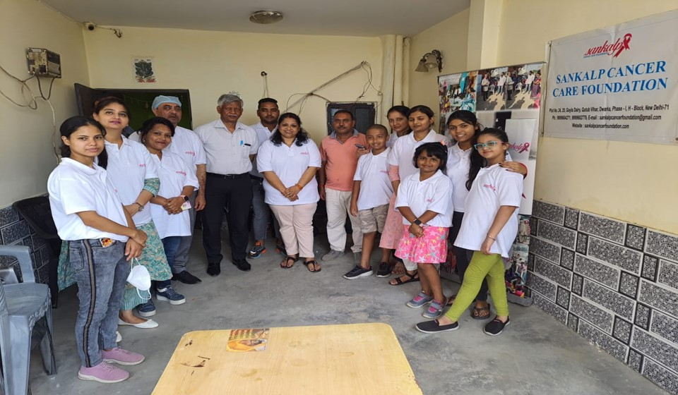
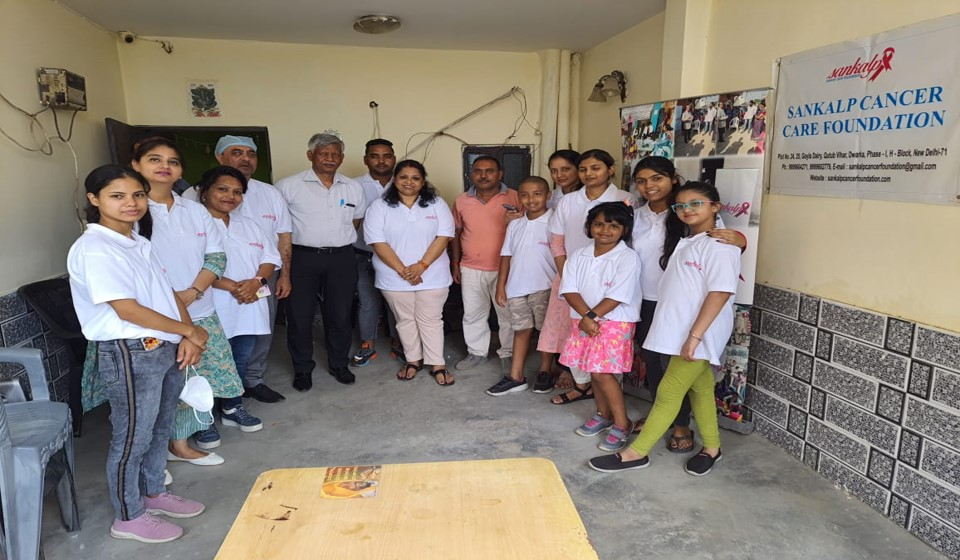

SANKALP CANCER CARE FOUNDATION
Sankalp Cancer Care Foundation established in 2018, with the mission of prevention, education, awareness and early detection of common cancers like breast cancer, cervical cancer, oral, prostate, lungs and other types of Childhood cancers at an early stage. Cancer treatment in our country is highly priced. When identified early, cancer is more likely to respond to effective treatment and results in a greater probability of survival, less suffering and often less expensive and less intensive treatment. According to World Health Organization (WHO) Cancer is a leading cause of death worldwide, accounting for nearly 10 million deaths in 2020. One in 10 Indians will develop cancer in lifetime and 1 in 15 Indians will die of cancer.
We have seen the vulnerable situation of Covid-19 Pandemic 2020-2021 where we were unable to do physical contact with masses. The SCCF Medical team did a commendable job in helping Covid patients with online consultation; arrange medications, hospital beds and oxygen management. Also, we supplied N-95 Mask, sanitizers, sanitary pads and Rations for the underprivileged.
During the last annual year 2020-2021, we have screened and educated around 2800 patients and operated were done with the help of SCCF Doctors. Recently with the kind support of National Hydroelectric Power Corporation (NHPC Limited) Government of India, we have been granted a MMU (mobile-medical Unit) Van equipped with the necessary Machines which will play an essential role in performance of the Task of this NGO and Achievement of the vision in 2022.
Looking ahead to year 2022, SCCF hopes to integrate the delivery of early detection by screening of various cancers in a large scale and save lives.
I wish you all and team of SCCF a happy healthy life, and hope for valuable support from Donors, as without you the mission is not achievable.
Dr B K Singh
Hon Executive Director
Sankalp Cancer Care Foundation
HIGHLIGHTS

Received mobile screening van from NHPC
Cancer awareness programs
Self examination of breast cancer
Distribution of books and pamphlets
Distribution of sanitary pads
Distribution of N95 masks in Covid
Ration distribution
Online consultation to Covid patients
Assistance for availability of hospital beds
Dr. B.K Singh (Hon. Executive Director) SCCF took permission for organizing awareness camp in New Delhi South East and South West District Administration.
Recent Event on Cancer Awareness Programmes
Sankalp Cancer Care Foundation (SCCF) organised a Cancer Awareness and Health check-up Camp at H Block, Goyla Dairy, Qutub Vihar, New Delhi on 19th June 2022. The Camp was very well attended by 350 people and educated on importance of detection of cancers at an early stage and its prevention. The free general health check-up included blood pressure & blood sugar monitoring, blood tests etc.
Dr. Feroz Pasha, Senior Consultant, Onco-surgery, Indraprastha Apollo Hospital, New Delhi and Hon. Medical Director SCCF and Dr. B.K. Singh, Hon. Executive Director SCCF and Associate Consultant Neurosurgery, with a dedicated team of nurses and volunteers conducted the medical camp. All patients were assessed and advised under the supervision of Dr. Pasha. Female participants were educated and made awared about breast and cervical cancer by SCCF’s Chairperson Ms Jayanti Singh. They were trained on breast self-examination technique and basic menstrual hygiene. About 280 sanitary pads were distributed.
Cancer Awareness Programmes

Sankalp Cancer Care Foundation (SCCF) has organized education and awareness camps in local areas of Qutub Vihar, Dwarka in New Delhi.
The cancer awareness programs were organized by Sankalp care foundation on World Cancer Day on February 4, 2022. The aim of the programme was to create awareness about cancer prevention, early detection and treatment. The programme was presided by Dr. B.K Singh with other medical staff. SCCF distributed pamphlets which contains basic information about early symptoms of most common cancer so that it creates awarenss amongst them. to the people education
Around 600 People were gathered at the centre. Nurses demonstrated techniques of breasts self-examination (BSE) also addressed the doubts and queries raised by the local people discussed various types of cancer, their causes and prevention.
Distribution of sanitary pads and N95 masks during Covid Lockdown


Sanitary pads were distributed in the remote area of Delhi NCR. The main aim of Sankalp is to increase awareness among the girls and women on Menstrual Hygiene. Volunteers explained how poor hygiene is linked to an increase risk of “cervical cancer”. Sankalp has distributed more than 2500 sanitary napkin packets to underprivileged girls and women in rural area. Sankalp has distributed more than 3000 masks and equal number of sanitizers to the people during Covid-19 pandemic and awareness about necessary precautions to be taken
Ration Distribution during Covid Lockdown


SCCF Team have been providing ration packages to the needy people since lockdown and Covid-19 pandemic in underprivileged areas of Delhi and Noida. Each ration package for a family of five contains wheat flour, rice, cooking oil, pluses and spices. More than 300 families has benefited in 2021.
We distributed food packages and blankets to the people living on the footpaths and Slums. There are at least 20 individual volunteers who worked in the ration distribution.
Online Consultation
SCCF has provided free online consultation with the help of doctors on panel of SCCF to Covid positive patients during the Covid-19 first and second wave. Doctors guided the patients regarding medications and other necessary requirements like oxygen therapy. More than 500 patients took online consultations from the doctors. Due to the covid-19, demand in hospital beds had increased.
SCCF has arranged beds for the needy patients who were unable to afford hospital fees and the team also arranged oxygen cylinder, ambulance service and medicines to the underprivileged patients.
Recently with the kind support of National Hydroelectric Power Corporation (NHPC Limited) Government of India, we have been granted a MMU (mobile-medical Unit) Van equipped with the necessary Machines which will play an essential role in performance of the Task of this NGO and Achievement of the vision in 2022


Gallery

 
